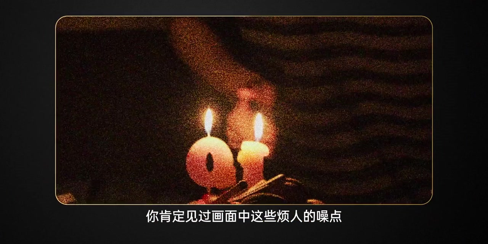
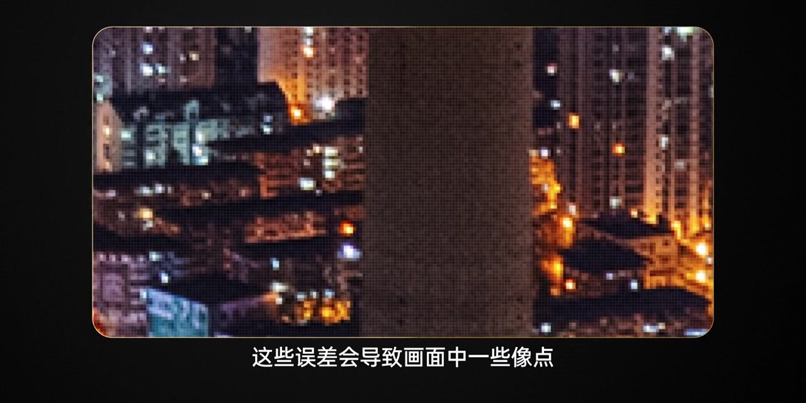
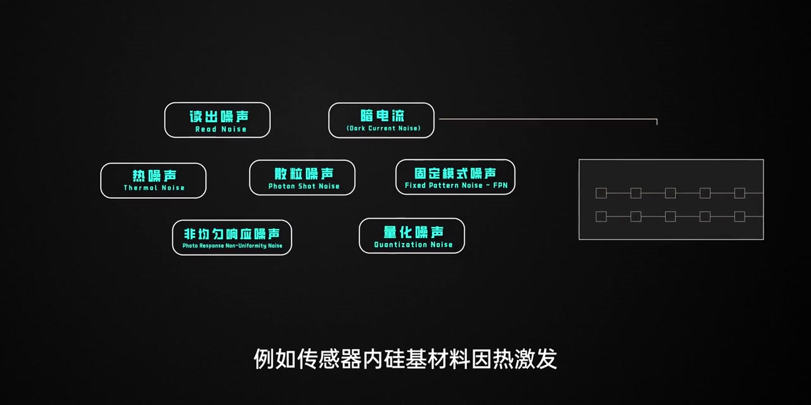
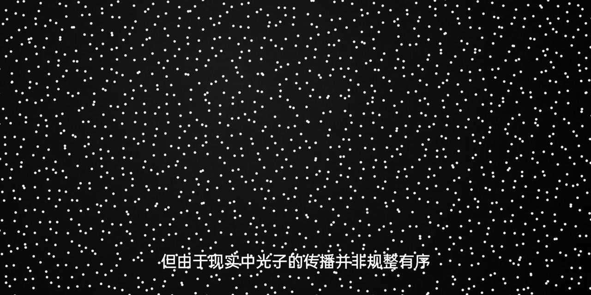
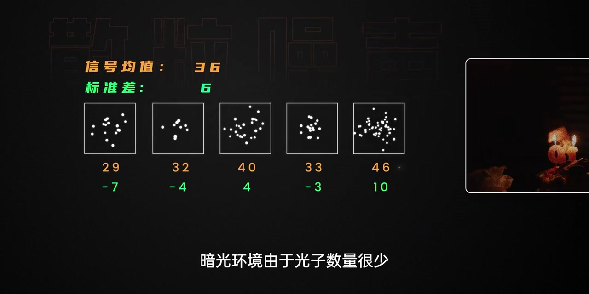
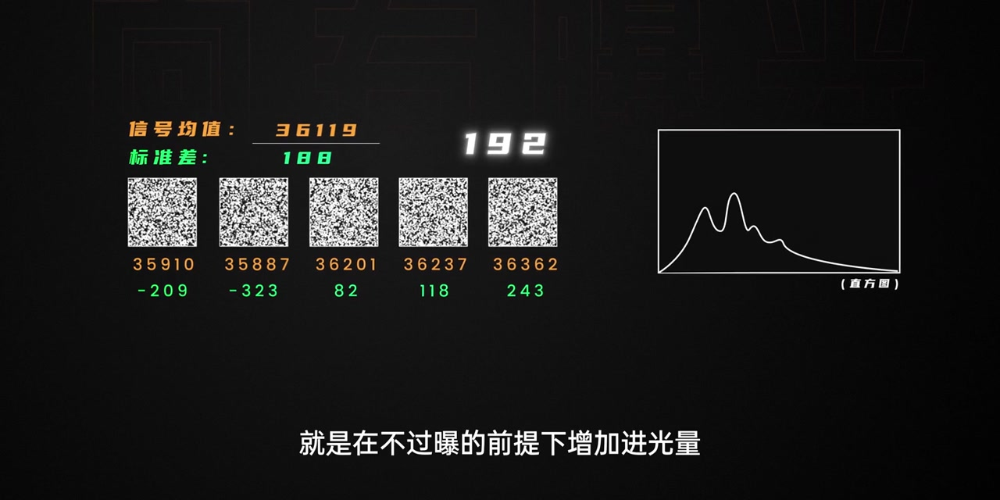

01
中文
画面中烦人的噪点，在信号处理领域叫噪声。
EN
Those annoying specks are called noise in signal processing.
表达提示noise（噪声）

Scene English · 摄影 · 相机知识
Why Does Your Image Have Noise?
🎧 语音讲解
What Noise Is
情境画面中烦人的噪点在电子信号处理领域被称为噪声。噪声的出现是因为信号在采集、传输、转换和量化过程中都存在一定误差，无法完全规避。这些误差导致像素不能精确显示原本的亮度和色度值，造成像素之间波动、过度不均。
画面中烦人的噪点，在信号处理领域叫噪声。
Those annoying specks are called noise in signal processing.
表达提示noise（噪声）
信号在采集、传输、转换和量化中都有误差。
Every stage—capture, transfer, convert, quantize—adds error.
表达提示quantize（量化）
误差导致像素之间的亮度色度波动。
Errors make pixels fluctuate in brightness and color.
表达提示fluctuate（波动）
noise（噪声
quantize（量化

Types of Noise
情境噪声的类型有很多：传感器内硅基材料因热激发形成的自由电子汇聚成暗电流；制造公差导致的像素个体光敏差异引发非均匀性噪声。但大部分噪声在日常拍摄中影响都很小，存在感较强的是散粒噪声和读出噪声。
热激发的自由电子汇聚成暗电流。
Thermally excited electrons pool into dark current.
表达提示dark current（暗电流）
制造公差导致像素个体光敏差异。
Manufacturing tolerances make pixels differ in sensitivity.
表达提示tolerance（公差）
日常影响大的主要是散粒噪声和读出噪声。
The big two in practice are shot noise and read noise.
表达提示shot noise（散粒噪声）
dark current（暗电流
tolerance（公差

Shot Noise Explained
情境理想情况下每个像素接受相同数量的光子，但现实中光子传播离散随机波动，导致每个像素在相同时间内接受的光子数量并不完全一致，由此引发的误差就是散粒噪声。暗光环境光子很少，微小误差在信号中占比很高，信噪比低、画质下降。
光子的传播离散随机，每个像素接到的光子数不完全一致。
Photons arrive randomly, so pixels catch uneven numbers of them.
表达提示photon（光子）
由此引发的误差就是散粒噪声。
That fluctuation is shot noise.
表达提示shot noise（散粒噪声）
暗光下光子少，信噪比低，画质下降。
Few photons in the dark mean a low SNR and worse quality.
表达提示signal-to-noise ratio（信噪比）
photon（光子
shot noise（散粒噪声

Raise SNR: Expose to the Right
情境随着光子数量增加，散粒噪声也增加，但有效信号的增加比率更大，信噪比显著提升。所以提升信噪比的最优点是在不过曝的前提下增加进光量，这也是为什么要向右曝光的根本原因。
光子增多时，信号增加比率大于噪声。
More photons grow the signal faster than the noise.
表达提示signal grows faster（信号增加更快）
信噪比显著提升，画质更好。
SNR rises sharply and quality improves.
表达提示SNR（信噪比）
提升信噪比最优点：不过曝的前提下增加进光量。
The best SNR boost is more light without clipping.
表达提示without clipping（不过曝）
这就是为什么向右曝光。
That's exactly why you expose to the right.
表达提示expose to the right（向右曝光）
SNR（信噪比
without clipping（不过曝

Front-End and Back-End Read Noise
情境信号在读出链路各环节都会引入噪声。浮动扩散节点和源极跟随器的噪声相对固定，与信号强弱和曝光时长无关，是制约动态范围下限的关键因素。提高ISO时TG对电压信号进行模拟放大，同步放大前端读出噪声；PGA和ADC本身引发的噪声不随ISO改变，叫后端读出噪声。
浮动扩散节点和源极跟随器的噪声相对固定。
Floating diffusion and source-follower noise is fairly fixed.
表达提示floating diffusion（浮动扩散）
提高ISO会同步放大前端读出噪声。
Raising ISO amplifies front-end read noise too.
表达提示front-end read noise（前端读出噪声）
PGA和ADC的噪声不随ISO改变，叫后端读出噪声。
PGA/ADC noise is ISO-independent—that's back-end read noise.
表达提示back-end（后端）
floating diffusion（浮动扩散
back-end（后端

What SNR Means
情境不管什么类型的噪声都没人喜欢，我们想要的是纯净的信号也就是光。把它们放在一起就有了信噪比，这个比值越高表示有效信号越强，画面纯净观感舒适；反之画质粗糙观感下降。
我们想要的只是纯净的信号，也就是光。
All we want is clean signal—the light itself.
表达提示clean signal（纯净信号）
信噪比越高，有效信号越强。
A higher SNR means stronger signal.
表达提示stronger（更强）
画面纯净观感舒适，反之画质粗糙。
Clean images feel great; low SNR looks rough.
表达提示rough（粗糙）
clean signal（纯净信号
stronger（更强
说噪声的本质
说散粒噪声
说向右曝光
说读出噪声
散粒噪声源于光子随机性而非像素大小
向右曝光过头会丢失高光
后期降噪治标，进光量才治本
散粒噪声与读出噪声机制不同